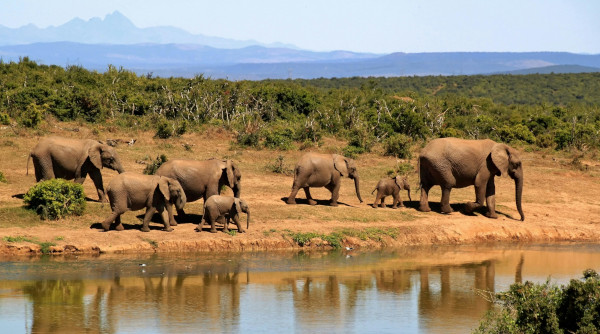
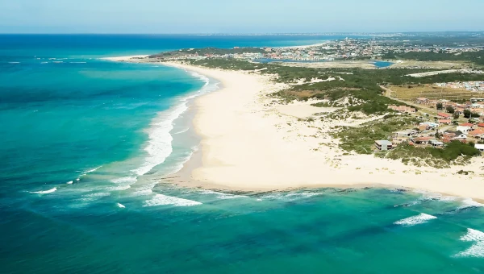
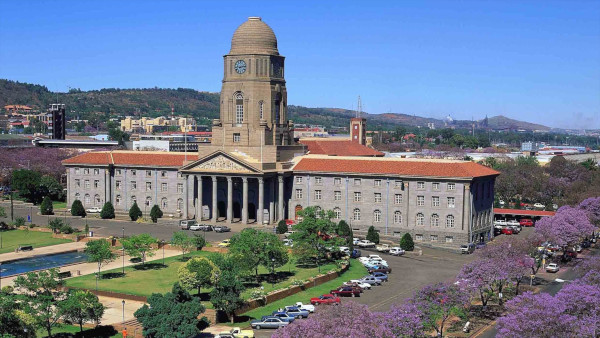
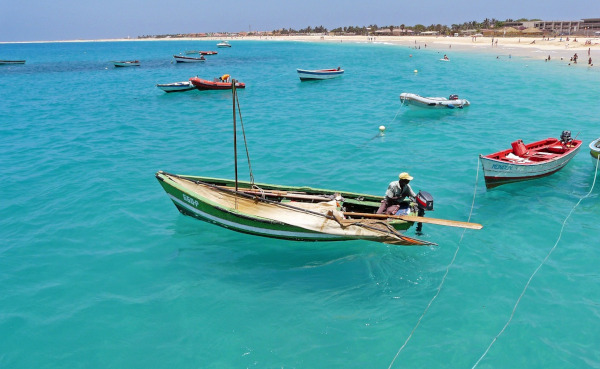
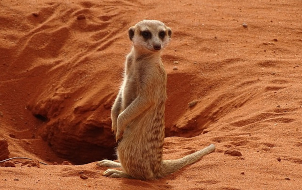

Descubra o melhor da África do Sul, de safáris a cidades vibrantes!
Visitar a África do Sul pode ser uma experiência incrível, repleta de paisagens deslumbrantes, uma rica diversidade cultural e oportunidades únicas de aventura.
Este guia completo está aqui para ajudá-lo a planejar sua viagem, cobrindo tudo desde as melhores datas para visitar até dicas de comunicação e um roteiro emocionante. Acompanhe!
Melhores datas para viajar
Para planejar sua viagem, é importante considerar as melhores datas para visitar. Pensando nisso, as melhores épocas dependem um pouco do seu objetivo de passeio, veja.
- Verão (dezembro a fevereiro): é a época mais quente e popular para turistas. Ideal para aproveitar as praias e atividades ao ar livre.
- Outono (março a maio): clima ameno, menos turistas e belas paisagens com folhas mudando de cor.
- Inverno (junho a agosto): ideal para safáris, já que a vegetação é menos densa e os animais são mais fáceis de avistar.
- Primavera (setembro a novembro): excelente para observar flores silvestres, especialmente na região do Cabo Ocidental.
Documentação necessária
Agora que você já sabe as melhores épocas para explorar as maravilhas da África do Sul, vamos falar sobre um aspecto crucial da sua viagem: a documentação necessária!
1.Passaporte
Seu passaporte deve ser válido por pelo menos 30 dias após a data de saída da África do Sul.
Pelo menos duas páginas em branco são necessárias para carimbos de entrada e saída.
2.Vistos
Brasileiros não precisam de visto para estadas de até 90 dias para turismo ou negócios.
3.Outros requisitos
O Certificado Internacional de Vacinação contra a Febre Amarela é obrigatório. Vale lembrar que é preciso tomar a vacina pelo menos 10 dias antes do embarque.
Moeda
A moeda oficial da África do Sul é o rand sul-africano, identificado pelo símbolo R e pelo código ZAR.
Atualmente, 1 rand sul-africano equivale a R$ 0,32. Mas sempre é bom verificar o valor atualizado antes da sua viagem.
Dicas para se comunicar
A África do Sul é um caldeirão linguístico, com 11 idiomas oficiais – incluindo zulu, afrikaans, português e inglês.
Aqui estão algumas dicas para se comunicar bem por lá:
- O português falado pelos sul-africanos, por vezes, pode ser de difícil compreensão para brasileiros devido ao sotaque diferenciado, que lembra um pouco o de Portugal. Quando isso acontecer, experimente se comunicar em inglês.
- Assim como os brasileiros, os sul-africanos valorizam cumprimentos físicos, contato visual e gestos expressivos durante a conversa. Manter as mãos no bolso ou evitar contato visual pode ser percebido como desinteresse. Então, você pode se soltar!
Veja 6 lugares para conhecer na África do Sul
O continente africano tem muitos encantos e cada um deles tem seu charme especial. Por isso, separamos seis lugares para conhecer na África do Sul que não podem faltar no seu roteiro.
1. Parque Nacional Kruger

Um dos lugares para conhecer na África do Sul é a vida selvagem.
Então, se você é daqueles que curte explorar o que há de melhor no destino, a dica aqui é o Parque Nacional Kruger, a joia da coroa!
Trata-se da maior reserva no continente africano, onde inclusive se encontra os “Big Five” — os cinco grandes animais, sendo leão, leopardo, elefante, rinoceronte e búfalo.
2. Port Elizabeth

São mais de 40 km de praias banhadas pelo oceano Índico nessa simpática metrópole herdade de uma colonização inglesa.
É ali que fica a famosa e cênica Rota Jardim ou Garden Route — estrada que cruza balneários charmosos, como Hermanus, e uma das mais saborosas regiões vinícolas do planeta.
Ao longo de 316 km de belas estradas entre a Cidade do Cabo e Port, você vai ver reservas naturais, safáris, museus, parques, bons restaurantes, lojas e as famosas vinícolas!
3. Pretória

Próxima a Johannesburgo, é nesta cidade onde se reúne o poder executivo da África do Sul.
Cidade tranquila, florida, repleta de 70 mil Jacarandás que florescem na Primavera! Museus, teatros, baladas, lojas, galerias de arte e um antigo mercado de agricultores compõem seus atrativos.
Não deixe de visitar Ndebele, uma tribo que vive na região e que colore suas casas de forma bem inusitada. É um dos lugares para conhecer na África do Sul mais belos!
4. Cidade do Cabo

Fonte: Pixabay
A cidade do cabo é a capital legislativa da África do Sul, dona de paisagens naturais incríveis e de uma gastronomia de dar água na boca, além de ser moderninha e vibrante. Também é dona de uma das montanhas mais bonitas do mundo: a Table Mountain.
A cidade ainda oferece opções de entretenimento que vão desde um passeio de barco na baía de Waterfront até uma aula de djembê na calçada da movimentada Long Street. O Two Oceans Aquarium também é uma ótima opção para toda a família.
5. Deserto do Kalahari

Fonte: Pixabay
Na região, o safári é especial! Não espere as tradicionais savanas, mas, sim, um deserto com fauna rara que inclui os divertidos suricatos.
Presenciar a beleza dessa fauna fica ainda mais prazeroso na Reserva Tswalu Kalahari, maior área particular da África do Sul e experiência de turismo sustentável. Prepare-se para safáris em grupos minúsculos, com saídas que podem acontecer a pé, a cavalo ou de 4×4, a qualquer hora do dia e como o visitante bem entender.